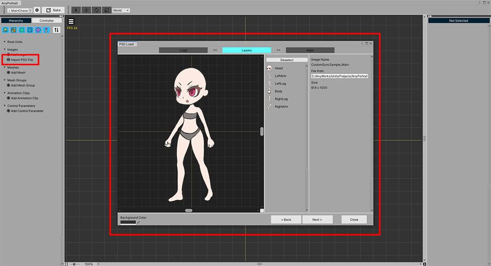
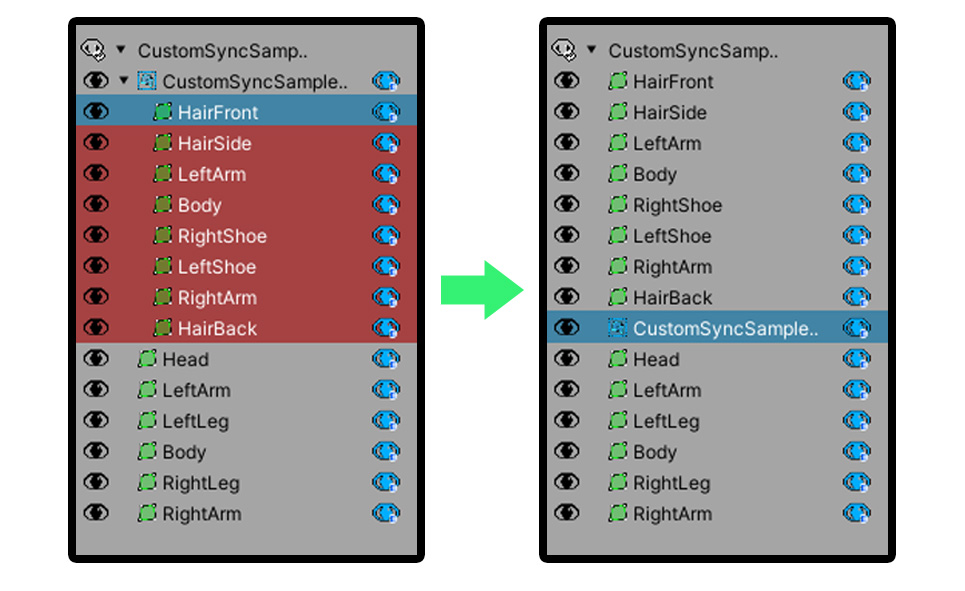
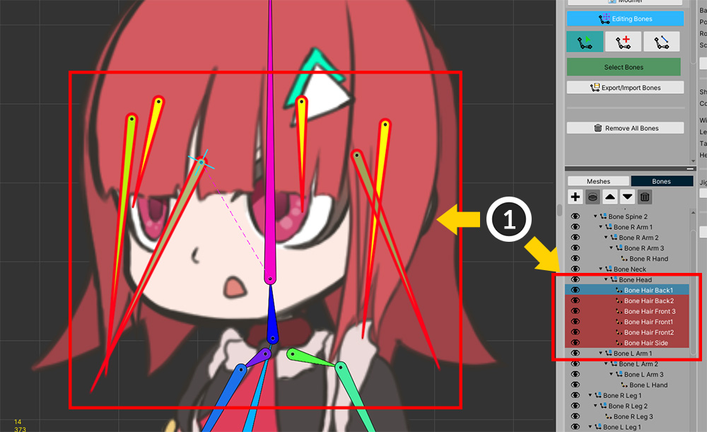
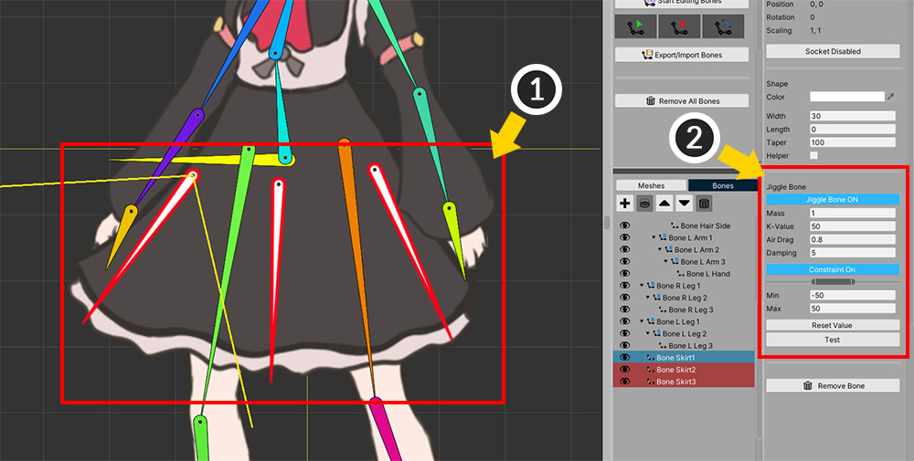
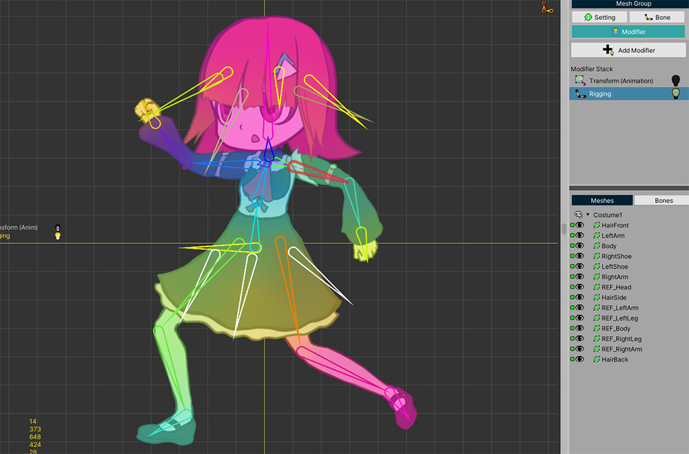
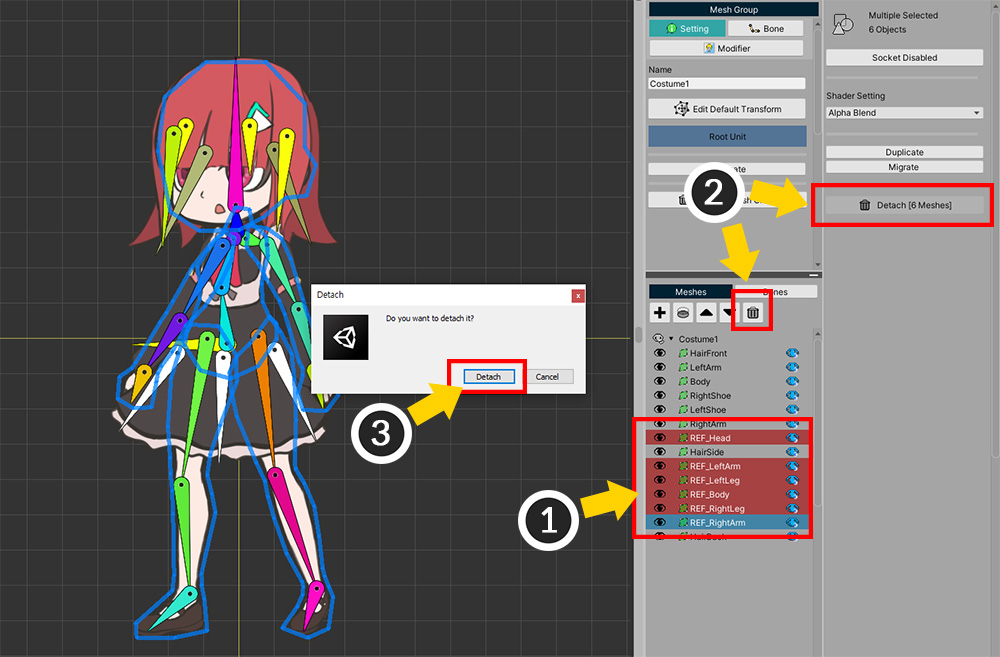
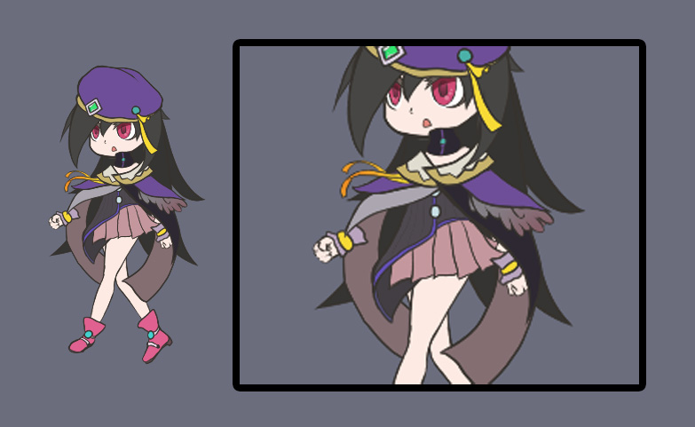
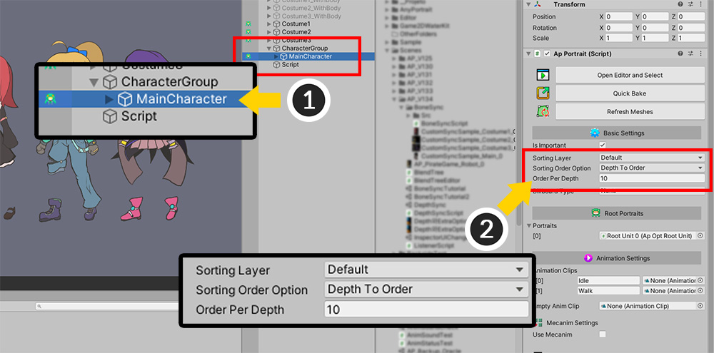

AnyPortrait > 메뉴얼 > 본을 동기화하여 의상 교체하기
본을 동기화하여 의상 교체하기
1.3.4
AnyPortrait를 이용하여 게임을 만드는 사용자들께서 "캐릭터의 의상을 교체하기"에 대한 많은 피드백을 주셨습니다.
저희 팀은 두가지 기능을 통해서 의상을 바꾸는 것을 제작하는 방법을 아래와 같이 안내해드렸습니다.
- 캐릭터의 의상을 교체하기
- 다른 캐릭터와 동기화된 재생
하지만 더 효율적으로 제작을 하기 위해서 저희는 또다른 방법을 고민하였습니다.
많은 게임 프로젝트에서 본을 이용하여 캐릭터 애니메이션을 제작한다는 점에서, 본을 동기화하는 방법이 꽤 유용할 것이라고 저희는 생각합니다.
이 페이지에서 소개하는 방법은 다음의 경우에 매우 유용할 것입니다.
- "본체"의 크기가 일정하고, 부착되는 "의상"의 수가 많은 경우
- "의상"에 별도의 애니메이션을 만들지 않고자 하는 경우
- "의상"의 대부분의 본들이 "본체"의 본을 공유하는 경우
- 본들의 크기를 바꾸지 않는 경우

이 페이지에서 다룰 캐릭터와 의상 이미지입니다.
모두 PSD 파일로 만들어졌습니다.
이 페이지에서는 "의상(Costume1, 2, 3)"을 각각 "본체(MainCharacter)"에 동기화하면서 의상을 교체하는 방법을 소개합니다.
본체 캐릭터 만들기

먼저, 바탕이 되는 "본체 캐릭터(MainCharacter)"를 만들어 봅시다.
PSD 파일을 가져와서 캐릭터를 제작합니다.

(1) Rigging 모디파이어를 이용하여 본들과 메시들을 연결하고 Transform (Animation) 모디파이어를 추가합니다.
(2) 2개의 애니메이션을 제작했습니다.
이것으로 "본체 캐릭터(MainCharacter)"가 완성되었습니다.
의상(Costume) 만들기
의상을 만드는 방법은 크게 두가지가 있습니다.
간단한 방법은, 본체 캐릭터의 본들을 파일로 내보내고, 다시 새로운 apPortrait에 가져와서 리깅하는 방법입니다.
본들을 파일로 내보내고 가져오는 방법은 아래의 페이지에서 확인할 수 있습니다.
- 본 설정을 파일로 내보내기/가져오기
하지만 동기화되는 객체들을 정교하게 연결하기 위해서는 섬세하게 리깅을 할 필요가 있습니다.
따라서 또다른 방법인 복제하여 같이 리깅하기를 소개합니다.

이 방법은 본체 캐릭터를 복제하고, 의상을 부착한 상태로 새로운 완성된 캐릭터를 만드는 것이 중요한 점입니다.
(1) 유니티 씬에서 앞서 만든 "MainCharacter"를 복제하고, 이름을 "Costume1"로 변경합니다.
(2) 이름이 다른 동일한 2개의 캐릭터를 볼 수 있습니다.
앞으로는 복제된 "Costume1" 캐릭터를 선택하여 편집해봅시다. (더이상 본체 캐릭터는 편집하지 않습니다.)

AnyPortrait 에디터로 "Costume1" 캐릭터를 엽니다.
아직 수정이 되지 않은 상태이므로 "MainCharacter"와 완전히 동일한 상태입니다.
(1) PSD로 된 의상 이미지 파일을 열어봅시다.

PSD 파일로 존재하는 "의상" 이미지를 가져옵니다.
이때 주의해야하는 점이 있습니다.
- 본체 캐릭터의 PSD 이미지의 크기와 의상의 PSD 이미지 크기가 동일해야 합니다.
- PSD 이미지 상에서 본체 캐릭터와 의상을 겹쳤을 때 위치가 딱 맞아야 합니다.
위 조건을 만족하지 않는 의상 이미지 파일을 연다면 수작업으로 의상의 위치를 조절해야 합니다.
의상 PSD 파일을 Atlas로 Bake하여 현재의 apPortrait로 가져옵니다.
Atlas Bake 설정은 본체와 동일하지 않아도 됩니다.

(1) 원래의 이미지, 메시, 메시 그룹과는 별도로 의상 이미지에 대한 객체들이 생성되었습니다.
(2) 특히, 의상에 대한 새로운 메시 그룹이 생성된 것을 확인해주세요.

다음 작업은, 본체에 대한 메시 그룹에 의상 메시들을 겹치는 것입니다.
(1) 다시 본체에 대한 메시 그룹을 선택합니다.
(2) + 버튼을 누릅니다.
(3) Mesh Group 탭을 선택합니다.
(4) 추가된 의상에 대한 메시 그룹을 선택합니다.
(5) Add 버튼을 누릅니다.

(1) 이제 의상 메시들이 있는 메시 그룹이 합쳐진 것을 볼 수 있습니다.
여기서 의상 메시들을 옮겨서 하나의 메시 그룹만 남겨봅시다.
(이 과정은 불필요한 데이터를 줄이기 위함이며 필수적으로 해야하는 작업은 아닙니다.)
(2) 의상 메시 그룹의 메시들을 모두 선택합니다. ( Shift 를 누르고 선택하면 편리합니다.)
(3) Migrate 버튼을 누릅니다.
(4) 두개의 메시 그룹이 보여질 것입니다. 루트 메시 그룹인 본체에 해당하는 메시 그룹을 선택합니다.
(5) Select 버튼을 누릅니다.
(6) Migrate 기능을 사용할 때는 데이터 이전 과정에서 문제가 발생할 수 있어서 주의가 필요합니다. (관련 페이지) 확인 버튼을 눌러줍니다.

이제 의상에 대한 메시 그룹 내에 메시들은 모두 본체 캐릭터의 메시들이 있는 루트 메시 그룹으로 이동했습니다.

비어있는 메시 그룹을 삭제합니다.
(1) 의상 메시 그룹을 선택합니다.
(2) Detach 버튼을 누릅니다.
(3) 안내 메시지에서도 Detach 버튼을 눌러서 메시 그룹을 분리합니다.
이제 해당 메시 그룹이 자식 메시 그룹이 아니게 되었습니다.
Detach 후, 왼쪽 Hierarchy 탭에서 의상 메시 그룹을 선택한 후 삭제하면 되겠습니다.

(1) 위와 같이 본체와 의상이 적절히 보여지도록, 의상 메시의 렌더링 순서들을 변경해봅시다.
(2) 의상 메시들과 본체 메시들을 구분하기 위해 본체 메시의 이름 앞에 "REF_" 라는 접두사를 붙여봅시다.
(3) 의상 메시들을 편집하고 완성하여 리깅 작업을 위한 준비를 합니다.
만약 의상 PSD 파일을 가져올 때의 주의사항이 지켜지지 않았다면, 이 단계에서 본체와 의상 메시들의 위치가 맞지 않을 것입니다.
이 단계에서 의상 메시들의 위치를 적절하게 수정합니다.

리깅을 하기 전에 본을 추가할 수 있습니다.
(1) 머리카락 움직임을 표현하기 위한 본들을 추가해보았습니다.
이 본들을 본체의 본들 중 "Head 본"의 자식으로 연결시켰습니다.

(1) 치마의 움직임을 위한 본들도 추가합니다.
(2) 지글본으로 설정하여 별도의 애니메이션이 없이도 물리적인 흔들림을 가지도록 만들 수 있습니다.

이제 의상 메시에 대해서 리깅을 해봅시다.
Rigging 모디파이어를 선택하고, 메시들을 추가한 후 가중치를 할당합니다.
(Rigging 모디파이어는 이미 존재할 것입니다.)

의상 메시를 대상으로 리깅을 할 때, 가장 중요한 것은 본체와 겹치는 부분에서 가중치를 할당하는 방법입니다.
가중치를 적절하게 할당하지 않는다면 캐릭터의 손이나 발이 의상을 뚫고 나오는 모습을 볼 수도 있을 것입니다.
이때, Pos-Copy 기능을 이용하면 이러한 고민을 덜 수 있을 것입니다. (관련 페이지)
(1) 리깅을 하고자 하는 옷과 겹쳐져있는 본체의 메시의 모든 버텍스들을 선택합니다.
(2) Pos-Copy 버튼을 눌러서 리깅 가중치들을 복사합니다.

(3) 의상 메시의 버텍스들을 선택합니다.
(4) Pos-Paste 버튼을 눌러서 복사된 가중치를 버텍스에 할당합니다.

이제 본을 움직여보면 본체의 메시와 함께 의상 메시가 같이 움직이는 것을 볼 수 있습니다.
이 단계에서 가중치를 더 정밀하게 수정해야 하지만, 이 기능을 통해서 많은 작업 시간을 줄일 수 있을 것입니다.

모든 메시들을 대상으로 리깅 작업을 마쳤다면 캐릭터가 옷을 입은 것 처럼 자연스럽게 움직일 것입니다.

같은 방법으로, 다른 의상(Costume2, Costume 3)도 만들어줍시다.
(각각의 의상들은 서로 다른 apPortrait가 되어야 합니다.)

현재 단계까지 완성된 화면입니다.
본체 캐릭터(MainCharacter)와 의상이 입혀진 3개의 캐릭터(Costume1, 2, 3)이 씬에 배치되었습니다.
아직 의상과 캐릭터가 합쳐진 상태이므로, Costume 1, 2, 3에서 본체 캐릭터의 메시들을 제거하는 작업이 남아있습니다.

의상 캐릭터(Costume1, 2, 3)를 AnyPortrait 에디터로 열고 메시 그룹을 선택합니다.
(1) 본체 캐릭터의 메시들을 선택합니다. 앞서 해당 메시들의 이름에 "REF_"를 붙였다면 구분하기 쉬울 것입니다.
(2) Detach 버튼을 누릅니다.
(3) 안내 메시지에서도 Detach 버튼을 누릅니다.

(1) 그 외에도 본체 캐릭터의 이미지, 메시들도 모두 삭제합니다.
이제 위와 같이 의상에 대한 이미지, 메시, 메시 그룹만 남았습니다.

여러개의 이미지나 메시들을 삭제할 때, 일일이 선택하고 삭제하는 것은 매우 번거로운 일입니다.
Hierarchy에서 우클릭을 한 후, 위와 같이 여러개를 한꺼번에 삭제할 수 있습니다.
이 기능에 대해서는 관련 페이지를 참고해주세요.

이 과정을 모두 마쳤다면 위와 같이 "본체 캐릭터" 1종과 "의상 캐릭터" 3종이 유니티 씬에 배치될 것입니다.
- 본체 캐릭터와 의상들은 거의 동일한 본들을 가지고 있으며 Rigging 모디파이어가 동일하게 적용되어 있습니다.
- Transform (Animation) 및 애니메이션들은 본체 캐릭터만 가지고 있습니다.
스크립트를 작성하여 동기화하기
다음 단계는 스크립트를 작성하여 의상을 본체 캐릭터에 부착하는 것입니다.

스크립트로 작성하고자 하는 내용을 위와 같이 구상해보았습니다.
- Character Group이라는 GameObject를 생성하고, 본체 캐릭터(MainCharacter)를 자식으로서 등록합니다.
- 의상을 부착(Attach)할 때 Character Group의 자식으로 등록합니다. Character Group를 제어하여 본체와 의상이 같이 움직이게 만들기 위함입니다.
- 렌더링 문제를 해결하기 위해 Character Group에 Sorting Group 컴포넌트를 추가합니다.
- 의상과 본체 캐릭터 간의 본의 움직임을 동기화합니다.
위 내용을 모두 담은 스크립트를 작성해봅시다.
새로운 C# 스크립트를 생성하고, 아래와 같이 작성해봅시다.
using UnityEngine;
using AnyPortrait;
public class BoneSyncScript : MonoBehaviour
{
public Transform characterGroup;
public apPortrait mainCharacter;
public apPortrait costume1;
public apPortrait costume2;
public apPortrait costume3;
void Start() { }
void Update()
{
//Q나 W키를 눌러서 본체 캐릭터의 애니메이션을 재생합니다.
if(Input.GetKeyDown(KeyCode.Q)) { mainCharacter.Play("Idle"); }
if(Input.GetKeyDown(KeyCode.W)) { mainCharacter.Play("Walk"); }
//숫자키 1을 누르면 모든 의상의 부착이 해제되고, 의상 1이 부착됩니다.
if(Input.GetKeyDown(KeyCode.Alpha1))
{
DetachCostumes();
AttachCostume1();
}
//숫자키 2를 누르면 모든 의상의 부착이 해제되고, 의상 2가 부착됩니다.
if(Input.GetKeyDown(KeyCode.Alpha2))
{
DetachCostumes();
AttachCostume2();
}
//숫자키 3을 누르면 모든 의상의 부착이 해제되고, 의상 3이 부착됩니다.
if(Input.GetKeyDown(KeyCode.Alpha3))
{
DetachCostumes();
AttachCostume3();
}
//숫자키 4를 누르면 모든 의상의 부착이 해제됩니다.
if(Input.GetKeyDown(KeyCode.Alpha4))
{
DetachCostumes();
}
}
//의상들의 부착을 모두 해제하는 함수
private void DetachCostumes()
{
//Unsynchronize 함수를 호출하여 본 동기화를 해제합니다.
costume1.Unsynchronize();
costume2.Unsynchronize();
costume3.Unsynchronize();
//부모 GameObject로 부터 독립을 시킵니다. (위치는 보기 좋게 적절히 분산시켰습니다.)
costume1.transform.parent = null;
costume1.transform.position = new Vector3(0, 0, 0);
costume2.transform.parent = null;
costume2.transform.position = new Vector3(4, 0, 0);
costume3.transform.parent = null;
costume3.transform.position = new Vector3(8, 0, 0);
}
//의상 1(Costume1)을 Character Group의 자식으로 등록하고, 본체 캐릭터의 본 움직임과 동기화를 합니다.
private void AttachCostume1()
{
//Character Group의 자식으로 등록하고, Local 위치를 초기화합니다.
costume1.transform.parent = characterGroup;
costume1.transform.localPosition = Vector3.zero;
//Synchronize 함수를 이용하여 본 움직임을 동기화할 수 있습니다.
costume1.Synchronize(mainCharacter, false, false, false, true, SYNC_BONE_OPTION.MatchFromRoot);
}
//의상 2(Costume2)를 Character Group의 자식으로 등록하고, 본체 캐릭터의 본 움직임과 동기화를 합니다.
private void AttachCostume2()
{
//Character Group의 자식으로 등록하고, Local 위치를 초기화합니다.
costume2.transform.parent = characterGroup;
costume2.transform.localPosition = Vector3.zero;
//Synchronize 함수를 이용하여 본 움직임을 동기화할 수 있습니다.
costume2.Synchronize(mainCharacter, false, false, false, true, SYNC_BONE_OPTION.MatchFromRoot);
}
//의상 3(Costume3)을 Character Group의 자식으로 등록하고, 본체 캐릭터의 본 움직임과 동기화를 합니다.
private void AttachCostume3()
{
//Character Group의 자식으로 등록하고, Local 위치를 초기화합니다.
costume3.transform.parent = characterGroup;
costume3.transform.localPosition = Vector3.zero;
//Synchronize 함수를 이용하여 본 움직임을 동기화할 수 있습니다.
costume3.Synchronize(mainCharacter, false, false, false, true, SYNC_BONE_OPTION.MatchFromRoot);
}
}
여기서 제일 중요한 스크립트는 AttachCostume 함수 안에 있습니다.
characterGroup의 자식으로 등록하는 코드와 더불어서 Synchronize 함수를 사용하는 부분을 주의깊게 확인해주세요.
필요하다면 애니메이션, 컨트롤 파라미터 또는 루트 유닛을 동기화하는 것도 가능합니다.
Synchronize 함수에 대한 자세한 설명은 관련 페이지에서 확인할 수 있으며, 또한 본 동기화에 대한 자세한 설명을 이 페이지의 하단에서 보실 수 있습니다.
이제 작성한 스크립트를 유니티 씬에 배치하여 동작하게 만듭니다.

(1) CharacterGroup이라는 이름의 GameObject를 생성하고, 본체 캐릭터(MainCharacter)를 자식으로 추가합니다. 또한 스크립트를 배치할 새로운 GameObject를 생성합니다.
(2) 스크립트를 컴포넌트로 추가하고, 각각의 요소들을 연결합니다.

(1) CharacterGroup을 선택하고 (2) Sorting Group 컴포넌트를 추가합니다.

게임을 실행하면 스크립트가 동작하면서 의상을 하나씩 캐릭터에 입혀볼 수 있습니다.
본이 동기화되면서 캐릭터와 의상이 하나가 된 것처럼 움직입니다.
메시의 렌더링 순서 수정하기

기본적인 동기화는 모두 끝났지만, 아직 남은 작업이 있습니다.
합쳐진 캐릭터를 자세히 보면, 겹쳐진 메시들의 렌더링 순서가 적절하지 않습니다.

의상 1(Costume1)의 경우 위와 같이 메시들의 렌더링 순서가 설정되도록 디자인이 되었습니다.
위의 순서에 맞게 메시들의 렌더링 순서를 할당하도록 스크립트를 수정해봅시다.
(메시의 렌더링 순서를 설정하는 방법을 다루는 자세한 방법에 대해서는 관련 페이지에서 확인할 수 있습니다.)
(앞부분 생략)
//의상 1(Costume1)을 Character Group의 자식으로 등록하고, 본체 캐릭터의 본 움직임과 동기화를 합니다.
private void AttachCostume1()
{
//Character Group의 자식으로 등록하고, Local 위치를 초기화합니다.
costume1.transform.parent = characterGroup;
costume1.transform.localPosition = Vector3.zero;
//Synchronize 함수를 이용하여 본 움직임을 동기화할 수 있습니다.
costume1.Synchronize(mainCharacter, false, false, true, SYNC_BONE_OPTION.MatchFromRoot, false);
//의상 1 메시들의 렌더링 순서(Sorting Order)를 본체의 메시를 기준으로 수정합니다.
costume1.SetSortingOrder("HairFront", mainCharacter.GetSortingOrder("Head") + 1);
costume1.SetSortingOrder("LeftArm", mainCharacter.GetSortingOrder("LeftArm") + 1);
costume1.SetSortingOrder("Body", mainCharacter.GetSortingOrder("LeftLeg") + 2);
costume1.SetSortingOrder("LeftShoe", mainCharacter.GetSortingOrder("LeftLeg") + 1);
costume1.SetSortingOrder("RightShoe", mainCharacter.GetSortingOrder("RightLeg") + 1);
costume1.SetSortingOrder("HairSide", mainCharacter.GetSortingOrder("RightArm") + 1);
costume1.SetSortingOrder("HairBack", mainCharacter.GetSortingOrder("RightArm") - 10);
}
//의상 2(Costume2)를 Character Group의 자식으로 등록하고, 본체 캐릭터의 본 움직임과 동기화를 합니다.
private void AttachCostume2()
{
//Character Group의 자식으로 등록하고, Local 위치를 초기화합니다.
costume2.transform.parent = characterGroup;
costume2.transform.localPosition = Vector3.zero;
//Synchronize 함수를 이용하여 본 움직임을 동기화할 수 있습니다.
costume2.Synchronize(mainCharacter, false, false, true, SYNC_BONE_OPTION.MatchFromRoot, false);
//의상 2 메시들의 렌더링 순서(Sorting Order)를 본체의 메시를 기준으로 수정합니다.
costume2.SetSortingOrder("HairFront", mainCharacter.GetSortingOrder("Head") + 1);
costume2.SetSortingOrder("HairSide", mainCharacter.GetSortingOrder("Head") - 1);
costume2.SetSortingOrder("LeftArm", mainCharacter.GetSortingOrder("LeftArm") + 1);
costume2.SetSortingOrder("Body", mainCharacter.GetSortingOrder("Body") + 1);
costume2.SetSortingOrder("BeltFront", mainCharacter.GetSortingOrder("LeftLeg") + 4);
costume2.SetSortingOrder("Pants_LeftLeg", mainCharacter.GetSortingOrder("LeftLeg") + 3);
costume2.SetSortingOrder("BeltBack", mainCharacter.GetSortingOrder("LeftLeg") + 2);
costume2.SetSortingOrder("LeftShoe", mainCharacter.GetSortingOrder("LeftLeg") + 1);
costume2.SetSortingOrder("RightLeg", mainCharacter.GetSortingOrder("RightLeg") + 2);
costume2.SetSortingOrder("RightShoe", mainCharacter.GetSortingOrder("RightLeg") + 1);
costume2.SetSortingOrder("RightArm", mainCharacter.GetSortingOrder("RightArm") + 1);
costume2.SetSortingOrder("RightArm", mainCharacter.GetSortingOrder("RightArm") + 1);
costume2.SetSortingOrder("HairBack", mainCharacter.GetSortingOrder("RightArm") - 10);
costume2.SetSortingOrder("HairAcc", mainCharacter.GetSortingOrder("RightArm") - 11);
costume2.SetSortingOrder("HairTail", mainCharacter.GetSortingOrder("RightArm") - 12);
}
//의상 3(Costume3)을 Character Group의 자식으로 등록하고, 본체 캐릭터의 본 움직임과 동기화를 합니다.
private void AttachCostume3()
{
//Character Group의 자식으로 등록하고, Local 위치를 초기화합니다.
costume3.transform.parent = characterGroup;
costume3.transform.localPosition = Vector3.zero;
//Synchronize 함수를 이용하여 본 움직임을 동기화할 수 있습니다.
costume3.Synchronize(mainCharacter, false, false, true, SYNC_BONE_OPTION.MatchFromRoot, false);
//의상 3 메시들의 렌더링 순서(Sorting Order)를 본체의 메시를 기준으로 수정합니다.
costume3.SetSortingOrder("Hat", mainCharacter.GetSortingOrder("Head") + 2);
costume3.SetSortingOrder("HairFront", mainCharacter.GetSortingOrder("Head") + 1);
costume3.SetSortingOrder("LeftArmFront", mainCharacter.GetSortingOrder("LeftArm") + 4);
costume3.SetSortingOrder("LeftHand", mainCharacter.GetSortingOrder("LeftArm") + 3);
costume3.SetSortingOrder("RightArmFront", mainCharacter.GetSortingOrder("LeftArm") + 2);
costume3.SetSortingOrder("Neck", mainCharacter.GetSortingOrder("LeftArm") + 1);
costume3.SetSortingOrder("LeftArmBack", mainCharacter.GetSortingOrder("LeftArm") - 1);
costume3.SetSortingOrder("BodyFront", mainCharacter.GetSortingOrder("LeftLeg") + 3);
costume3.SetSortingOrder("Skirt", mainCharacter.GetSortingOrder("LeftLeg") + 2);
costume3.SetSortingOrder("LeftShoe", mainCharacter.GetSortingOrder("LeftLeg") + 1);
costume3.SetSortingOrder("RightShoe", mainCharacter.GetSortingOrder("RightLeg") + 1);
costume3.SetSortingOrder("BodyBack", mainCharacter.GetSortingOrder("RightLeg") - 1);
costume3.SetSortingOrder("RightHand", mainCharacter.GetSortingOrder("RightArm") + 1);
costume3.SetSortingOrder("RightArmBack", mainCharacter.GetSortingOrder("RightArm") - 1);
costume3.SetSortingOrder("HairBack", mainCharacter.GetSortingOrder("RightArm") - 10);
}
}
의상에 따라 메시들이 다르게 구성되므로, 메시의 Sorting Order를 지정하는 코드가 각각 다릅니다.
위 스크립트는 설명을 위해 러프하게 작성되었는데, 별도의 규칙을 만드는 등의 더 세련되게 스크립트를 작성하는 것도 가능할 것입니다.

이제 유니티 씬으로 돌아와서 Sorting Order 옵션을 설정합니다.
(1) 본체 캐릭터(MainCharacter)를 선택합니다.
(2) Sorting Order Option을 Depth To Order로 설정하고, Order Per Depth를 적당히 큰 값을 지정합니다. 여기서는 10을 지정했습니다.

본 동기화를 이용하여 캐릭터의 의상을 교체하는 예제가 완성되었습니다!
본 동기화 조건과 옵션
본의 동기화에 대한 특성은 다음과 같습니다.
- 본을 동기화하는 조건은 크게 이름과 구조입니다.
- 동기화를 하기 위해서는 동기화 대상이 되는 본들간의 이름이 같아야 합니다.
- 이름이 같은 경우 루트 본으로부터 부모-자식 구조가 동일해야합니다. 단 이것은 옵션에 따라 조금 다릅니다.
- 본의 위치, 형태, 크기는 동기화 조건에서 고려되지 않습니다.
- 우연히 이름이 같은 본들이 의도하지 않게 동기화 될 수 있으므로, 이름을 잘 설정해야 합니다.
- 기본적으로는 루트 본부터 동일한 구조를 가져야 합니다.
- 루트 유닛의 순서를 고려합니다. 같은 번호의 루트 유닛에 포함된 본들과 동기화를 시도합니다.
- 일부 동기화되지 않는 본이 있어도 됩니다.
다만, 동기화의 옵션에 따라서 동기화 결과가 조금 다릅니다.

동기화의 옵션에 따른 동기화 결과 차이에 대한 도식입니다.
Synchronize 함수의 인자인 SYNC_BONE_OPTION 값에 따라서 동기화 결과가 바뀝니다.
- MatchFromRoot : 루트 본부터 동일한 구조를 가져야 동기화가 됩니다.
- MatchFromSubBones : 동기화 되는 본들 중 루트 본이 대상 캐릭터의 루트 본이 아니더라도 동기화가 됩니다. 위의 경우 Arm1 > Arm2 > Hand의 경우가 이에 해당됩니다. (반대로는 동기화되지 않습니다.)
1.3.5
여러개의 텍스쳐 아틀라스(Atlas)를 이용하는 경우 드로우콜(Draw Call)이 크게 증가할 수 있습니다.
공통의 텍스쳐를 이용하는 방법이나 별도의 최적화 기법이 필요합니다.
재질 병합 기능을 이용해보세요. (해당 페이지로 이동)